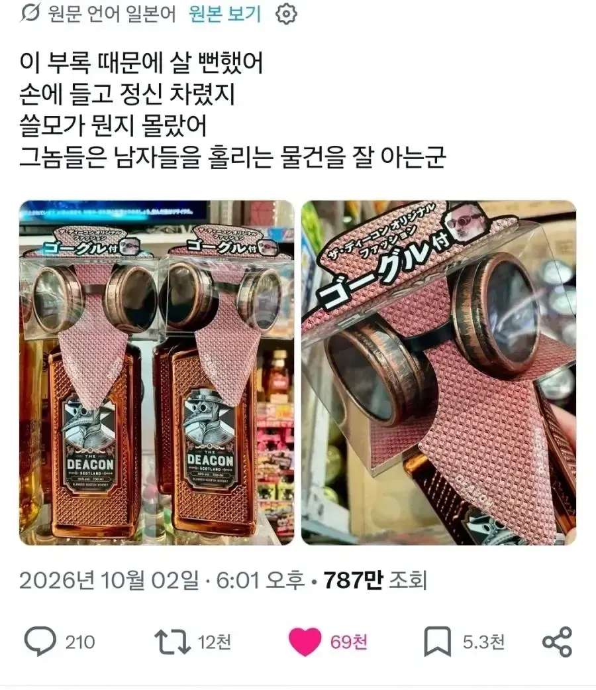
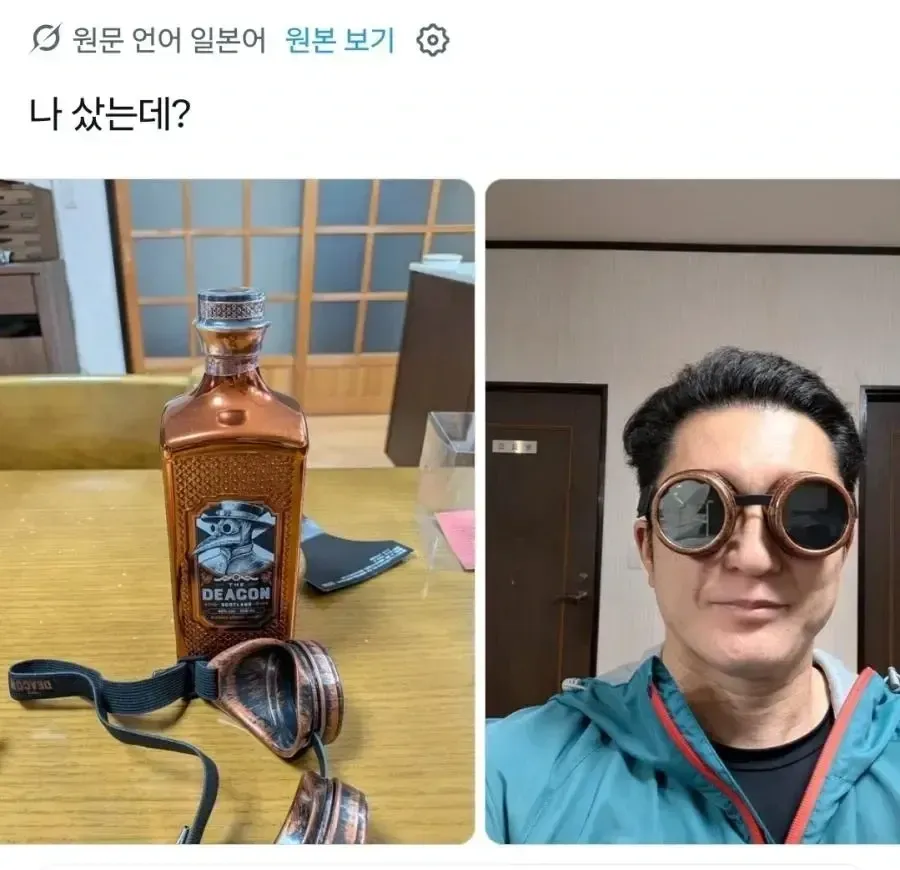
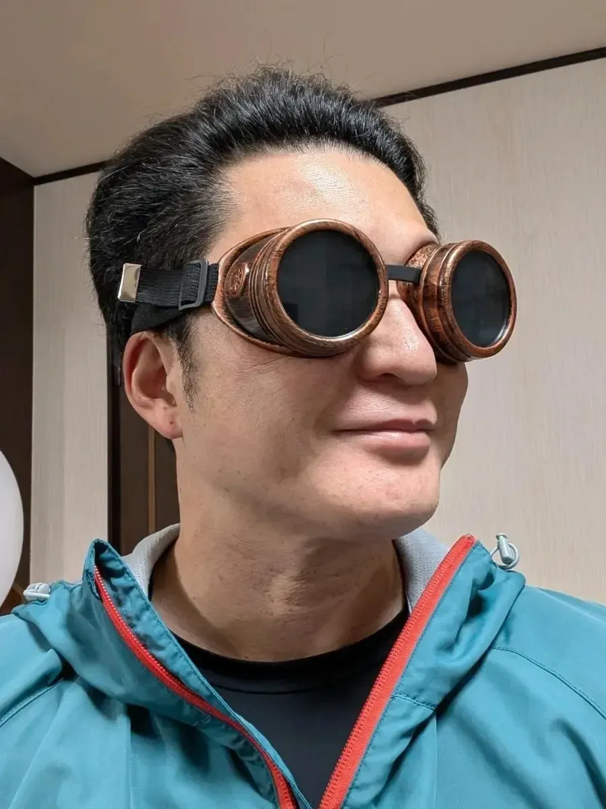

138 · 8 · 4 시간 전 · 원문



수집 당시 댓글 8개
비크 · 2 시간 전
ㅋㅋㅋㅋㅋ
위스키봉봉 · 2 시간 전
모델건이 딱 적당한게 집에 있었네 ㅋㅋㅋㅋㅋㅋ
광구쟁이 · 1 시간 전
워보이
년째도쿄생활중 · 1 시간 전
왜 우리 동내는 아직 사은품이 없는건대!!
비정상헬린이 · 57 분 전
헉 탐나네
자기합리화 · 50 분 전
지금 우리도 살수 있나?
뱅따꿍 · 38 분 전
첫번째 아저씨 김정식인줄 알았네
게이브뉴웰 · 7 분 전
구리 황동엔 남자를 끌어들이는 무언가가 있다
ㅋㅋㅋㅋㅋ